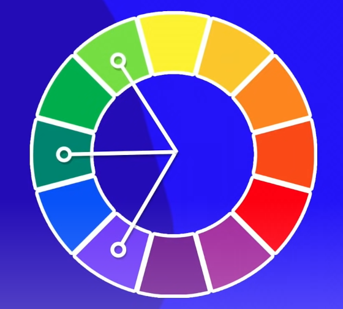
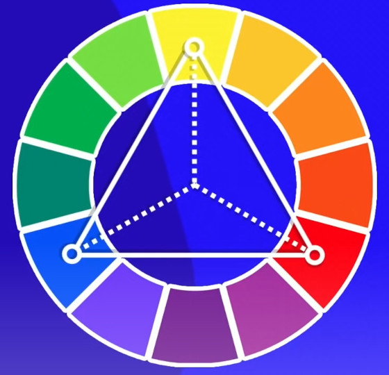
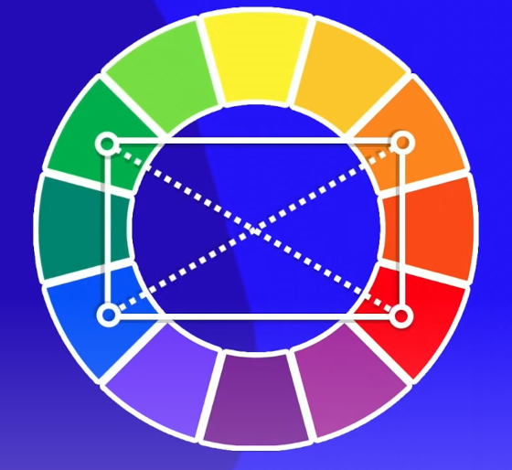
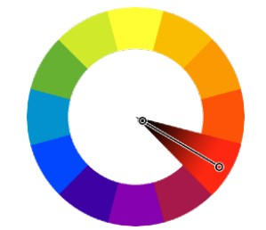

Estão no exato lado oposto da cor escolhida, do amerelo é violeta, por exemplo. Elas geram contraste
São as corres com menos contraste, elas as duas cores vizinhas da escolhida. Da azul é azul-esverdeado e azul arroxeado. Não tem contraste, mas tem Harmônia semelhante

Usa duas cores análogas mais proximas da cor relacionada escolhida. Usa-se caso não queira um contraste grande.

São três cores intercaladas. geram uma palheta mais dura
obs: o triângulo pode ser girado para qualquer lado que será a palheta triádica
Pula de duas em duas cores até formar um quadrado para formar cores fortes e bem balanceadas

Pegar o oposto de duas cores, formando um retangulo
Uma harmonia bem diferente das anteriores, que usa apenas uma cor e varia apenas a sua saturação e o seu brilho. Essa combinação geralmente gera pouquíssimo contraste entre as cores escolhidas, mas acaba gerando um resultado visual bem agradável aos olhos, conhecido como “degradê”.
Use essa ferramenta para criar palhetas de cores clicando-aqui
Esse tem a opção de preview sua palheta em um site-exemplo. Ir ao paletton clicando aqui
Esse vai passando palhetas aleatória e você tra as cores que gostou
COLOZILLA é uma extensão do chrome que mostra o código RGB de qualquer cor de qualquer site ou pdf que seja aberto no chrome